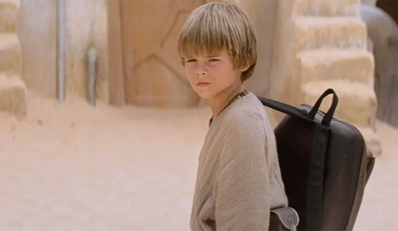
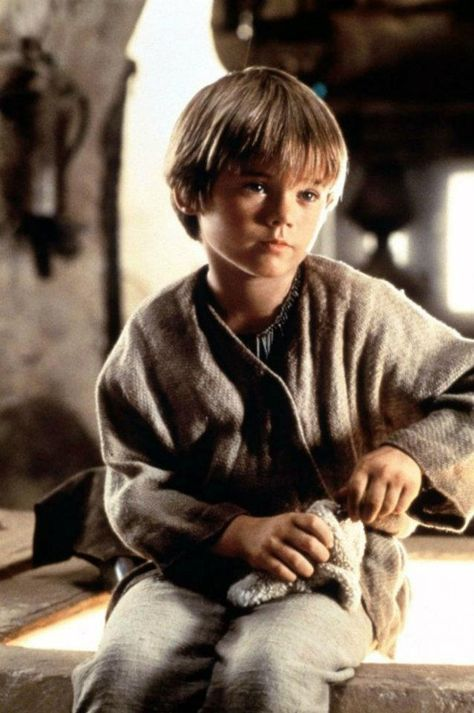

Overview
Purpose
This website is gonna dive deep into Anikan Skywalker's journey and it will showcase his pivotal role, destiny, and how he fulfills the prophecy as the Chosen One.
Audience
For those who loves Anikan Skywalker or for those who wants to learn more about Anikan Skywalker.
Branding
Website Logo

Style Guide
Color Palette
Palette URL: https://coolors.co/396e94-e7c24f-a43312-381d2a-aabd8c| Primary | Secondary | Accent 1 | Accent 2 |
|---|---|---|---|
| [#28587B] | [#0E7C7B] | [#53F4FF] |
Typography
Heading Font: [New Times Roman]
Paragraph Font: [Nothing you could do]
Normal paragraph example
Anakin Skywalker is often regarded as the "Chosen One" in the Star Wars universe due to a prophecy within the Jedi Order. This prophecy foretells the coming of an individual who will bring balance to the Force. Anakin's significance as the Chosen One stems from his unusually high concentration of midi-chlorians, which are microscopic organisms that are linked to the Force. His extraordinary Force sensitivity, coupled with his potential for both great good and great darkness, led the Jedi Council to believe he could fulfill this prophecy.
Colored paragraph example
Anakin's journey from a young slave on Tatooine to becoming a Jedi Knight and eventually Darth Vader, the Sith Lord, is a central theme in the Star Wars saga. His struggle with the dark side of the Force, as well as his eventual redemption, underscores the complexity of his role as the Chosen One. Ultimately, it's Anakin's actions and decisions that shape his destiny, and his story serves as a compelling exploration of the eternal battle between light and dark within the Star Wars universe.
Navigation
Site Map
Content
Home page
The Home page of this website serves as the gateway to an extensive exploration of Anikan Skywalker's life. It spans his entire timeline, from a young, innocent child to his eventual transformation into the formidable Darth Vader. This page introduces the website overarching narrative, offering a tantalizing preview of the journey ahead. It promises a comprehensive dive into the life of one of Star Wars' most iconic characters. Users can expect to uncover the pivotal moments that define Anakin's path, both visually and through engaging content. This page is adorned with two intriguing images, setting the tone for the captivating story that follows.
Images for the Home page


[Page 2-Anikan's Younger Years]
Page 2, titled "Anikan's Younger Years," takes a focused look at Anakin Skywalker's formative years. It delves into his early life, offering insight into his humble beginnings, dreams, and the circumstances that molded the young Jedi-to-be. Through engaging content and captivating imagery, this page provides a nostalgic trip through Anakin's childhood, allowing visitors to connect with the innocence and curiosity that defined him during his younger years. From his pod-racing adventures on Tatooine to his dreams of a better life, this page paints a vivid picture of the young Anakin's world. Two images accompany the narrative, bringing to life the experiences and challenges that set the stage for his remarkable destiny.
Images for the Page 2
 [Page 3-Anakin's Apprentice Years]
Page 3, titled "Anikan's Apprentice Years," is dedicated to Anakin's apprenticeship, offering a detailed exploration of his training and growth as a Jedi. This phase of his life is pivotal in his journey towards becoming a legendary figure in the Star Wars saga. The page delves into the challenges, triumphs, and mentors that shaped Anakin's path, providing a comprehensive understanding of the training that would ultimately define his character. Accompanied by vivid images, it allows visitors to relive the training and trials Anakin faced, including his interactions with notable characters like Obi-Wan Kenobi and Yoda. This section immerses users in Anakin's evolving relationship with the Force and showcases the pivotal moments that paved the way for his destiny.
Images for the Page 3
.jpeg)
[Page 4-Anikin's Turn to the Dark Side]
Page 4, title "Anikin's Turn to the Dark Side," is a gripping exploration of the momentous turning point in Anakin's life when he succumbs to the allure of the dark side and becomes Darth Vader. The page delves deep into the events, emotions, and choices that led to this dramatic transformation. Through compelling content and dramatic imagery, it immerses visitors in the darkness that shrouds Anakin's later years. This section offers a powerful examination of the inner conflict and external forces that drive Anakin's descent into one of the most iconic villains in cinematic history. The two images featured on this page capture the ominous and menacing presence that Darth Vader embodies, providing a visually striking portrayal of this critical juncture in Anakin's life.
Images for The Page 4
.jpeg)
.jpeg)
[Page 5-Quotes and Memorable moments of Anikan Skywalker:
Page 5, "Quotes and Memorable Moments of Anakin Skywalker," revisits the most iconic and unforgettable quotes and scenes from Anakin's life. This page allows fans to relive the powerful dialogues and impactful moments that have solidified Anakin Skywalker as a beloved character in the Star Wars universe. While no content is provided here, this page is intended to feature quotes and images that encapsulate the essence of Anakin's character and his journey, providing fans with a nostalgic trip through some of the most memorable aspects of Anakin's story.
.jpeg)
Wireframes
Create three wireframes for your site. One for each page and list them here
Home
[Any additional details about home that the wireframe does not make clear]
[Page 2]
[Any additional details about page 2 that the wireframe does not make clear]
[Page 3]
[Any additional details about page 3 that the wireframe does not make clear]
[Page 4]
[Any additional details about page 3 that the wireframe does not make clear]